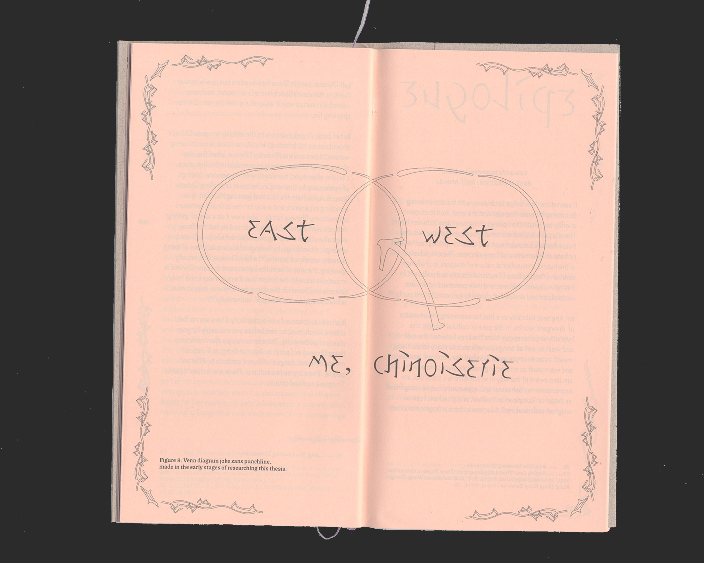
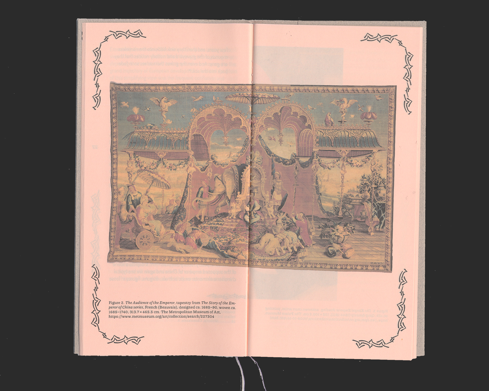
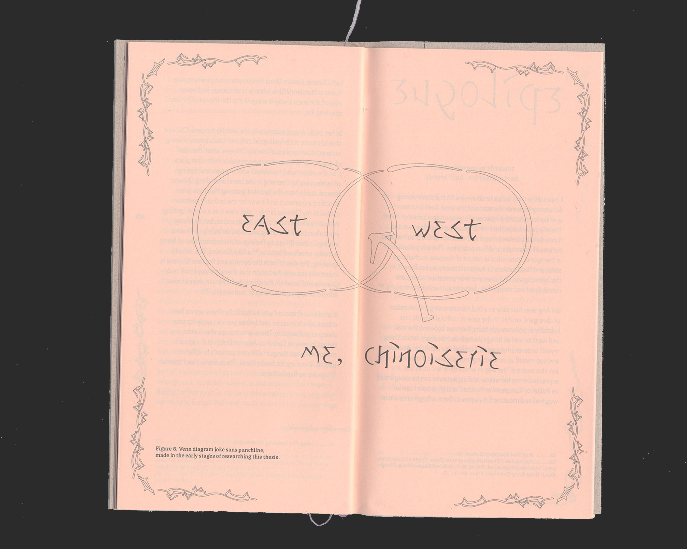
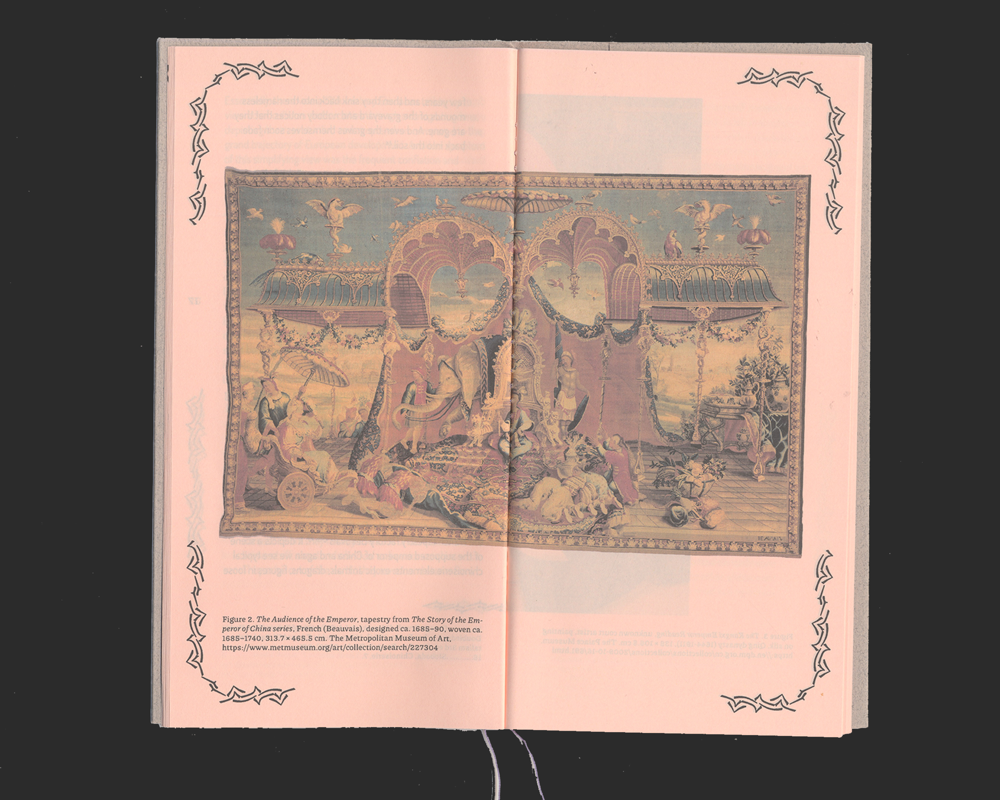

Fake Chinese
2030
typography
book-making
book design
“Fake Chinese” is the thesis of Isabel Wang which forms the central and theoretical body or her work. It’s been such a fruitful, collaborative and intense process since I got on the journey of making the publication. I am glad that we could learn from each other, not only from the artistic practices, but also from out own (overlapping, conflicting, interestingly intertwined) identities and personal experiences.
Using the strokes in Chinese characters to construct English letters, patterns, and re-construct Chinese, the design attempts to form a mockery of the daily cultural appropriation we’ve seen, but has evolved into something of a bitter-sweetness.
Using the strokes in Chinese characters to construct English letters, patterns, and re-construct Chinese, the design attempts to form a mockery of the daily cultural appropriation we’ve seen, but has evolved into something of a bitter-sweetness.
Presentation:
2022
CHAxART Amsterdam
LIKEWISE, solo exhibition of Isabel Wang
 


